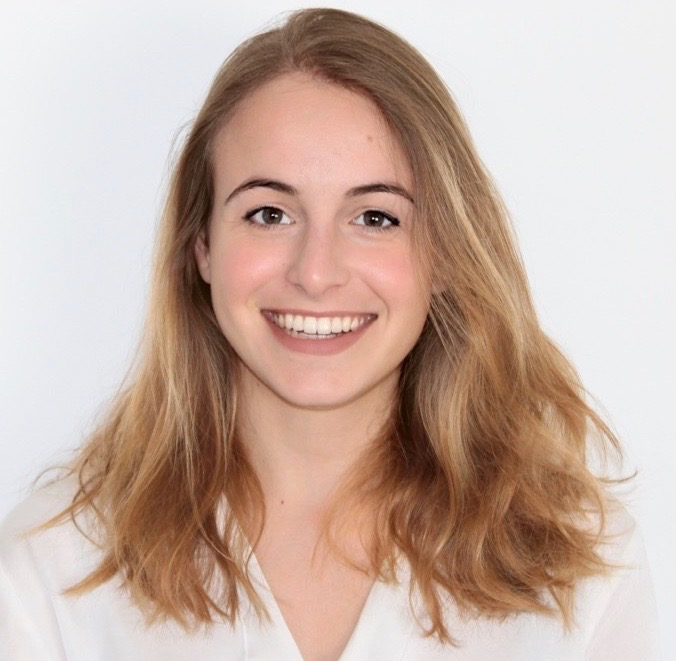

Laura Manduchi
Ph.D. Candidate, Computer Science
ETH Zürich, Institute for Machine Learning
Medical Data Science group
Email: laura.manduchi at inf.ethz.ch


I am a PhD student in Computer Science at ETH Zürich under the supervision of Julia Vogt and Gunnar Rätsch. I am member of the Medical Data Science group and the ETH AI Centre. My research lies at the interplay between probabilistic modelling and deep learning, with a focus on representation learning, deep generative models, and clustering algorithms. I am particularly interested in incorporating domain knowledge in the form of constraints and probabilistic relations to obtain preferred representations of data that are robust to biases, with applications in medical imaging and X-ray astronomy.
I did my undergraduate studies in Information Engineering at the University of Padua, Italy, where I worked with Fabio Vandin on the Optimization of Fast Westfall-Young algorithm for mining significant patterns. I further obtained a M.Sc. in Data Science at ETH Zürich, where I acquired a strong background in Machine Learning. During my master's studies, I gained practical experience by working with Digited Galaxus, Switzerland, to implement subset selection algorithms using the Imitation Learning procedure. My Master’s thesis project under the supervision of Gunnar Rätsch was focused on the intersection between clustering and representation learning. After that, I did a research internship at the European Space Agency where I had the opportunity to apply state-of-the-art Machine Learning methods in astrophysics. In February 2020 I joined the Medical Data Science lab lead by Julia Vogt at ETH as a PhD student. During my PhD studies, I completed an internship at Microsoft Research Cambridge, working with Melanie F. Pradier on disentangled representantions of T-cell receptors repertoire. I am the co-leader of CSNOW, Computer Science Network of Women at ETH. I am supported by a PhD fellowship from the Swiss Data Science Center.
Publications
- Learning Group Importance using the Differentiable Hypergeometric Distribution.
Thomas M Sutter, Laura Manduchi, Alain Ryser, Julia E Vogt
Spotlight ICRL, 2023.
[paper] - Weakly supervised inference of personalized heart meshes based on echocardiography videos.
F. Laumer, M. Amrani, L. Manduchi, A. Beuret, A. Dubatovka, L. Rubi, C. Matter, J. M. Buhmann.
Medical Image Analysis 2022.
[paper] - Anomaly Detection in Echocardiograms with Dynamic Variational Trajectory Models.
Alain Ryser, Laura Manduchi, Fabian Laumer, Holger Michel, Sven Wellmann, Julia E Vogt
Machine Learning for Healthcare (MLHC), 2022.
[paper] - A Deep Variational Approach to Clustering Survival Data.
Laura Manduchi, Ričards Marcinkevičs, Michela C. Massi, Thomas Weikert, Alexander Sauter, Verena Gotta, Timothy Müller, Flavio Vasella, Marian C. Neidert, Marc Pfister, Bram Stieltjes, Julia E. Vogt
ICLR, 2022.
Contributed talk. AI for Public Health Workshop, ICLR 2021.
[paper][code] - Deep Conditional Gaussian Mixture Model for Constrained Clustering.
Laura Manduchi, Kieran Chin-Cheong, Holger Michel, Sven Wellmann, Julia E. Vogt.
NeurIPS, 2021
[paper][code] - Deep Heart Beat: Latent trajectory learning of cardiac cycles using cardiac ultrasounds.
Fabian Laumer, Gabriel Fringeli, Alina Dubatovka, Laura Manduchi, Joachim M. Buhmann
Best Newcomer Award and Spotlight presentation. ML4H Workshop, NeurIPS 2020.
[paper][code] - T-DPSOM: an interpretable clustering method for unsupervised learning of patient health states
Laura Manduchi, Matthias Hüser, Martin Faltys, Julia E. Vogt, Gunnar Rätsch, Vincent Fortuin.
ACM CHIL 2021 and ML4H Workshop, NeurIPS 2019.
[paper][code]
Invited Talks
- May 2022: "Incorporating domain knowledge in deep generative models for weakly supervised clustering" medAI talk series at Stanford University. See video here.
- December 2021: "Deep Variational Approaches for Weakly Supervised Clustering" Thomas Gärtner's lab at the TU Wien.
- May 2021: "A Deep Variational Approach to Clustering Survival Data" IBM research (Zurich, Switzerland)
- December 2019: "Can Neural Networks help to understand X-ray spectra?" European Space Agency (Madrid, Spain)
Teaching
- Spring 2022: Head Teaching Assistant for Machine Learning for Healthcare at ETH Zürich
- Fall 2021: Teaching Assistant for Advanced Machine Learning at ETH Zürich
- Spring 2021,2020: Teaching Assistant for Machine Learning for Healthcare at ETH Zürich
- Fall 2020: Teaching Assistant for Probabilistic Artificial Intelligence at ETH Zürich
- Spring 2019: Student Teaching Assistant for Computational Intelligence Lab at ETH Zürich
Service
- Co-leader CSNOW: leading a team of students motivated to abolish gender-based barriers and prejudices in computer science.
- Conference Reviewer: NeurIPS 2022, Advances in Approximate Bayesian Inference and Bridging the Gap: From ML Research to Clinical Practice workshop, NeurIPS 2021.
Template Design by Aditya Grover.